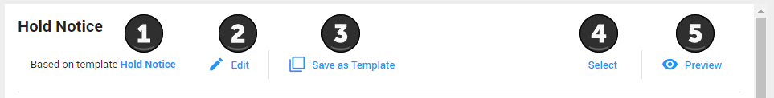
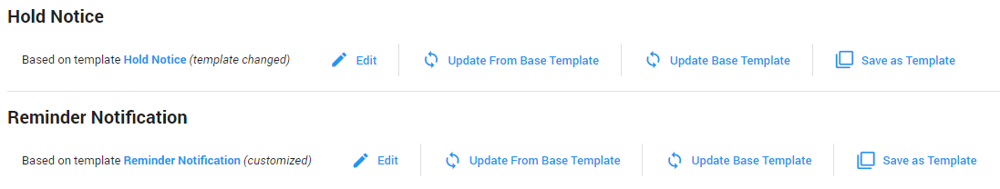

You can also select the Custodians tab and select the + Add Custodians button there (the tab button).
Each option will guide you to the Add Custodians popup.
Sort/filter and select the Custodians you want to add to the Hold. Click Add.
View the most important information of a Hold and follow the steps required to finish a Hold.
The flow of a Hold
The top right blue button indicates the next step (the flow) of a Hold after the initial creation.
| Status | Flow |
| Draft | (1) Add Custodians, (2) Define Messages, (3) Issue Hold - please note that you might want to add Questionnaires or change the Scheduling scheme first |
| Issued | Lift Hold |
| Lifted | No further actions required |
Contents
Overview
View the Hold Summary, the Custodians, the Messages and the Activity. Each tile has an action button which brings you to the related tab. You can either edit the Hold Summary, Add/Show Custodians, View More Messages, or View More Activity. You can also select one of the other tabs directly (Custodians, Messages, Questionnaires, Scheduling, Activity).
Alternatively, follow the flow by clicking the blue button in the top right corner. This flow button will guide you through your Hold from beginning to end.
Custodians
When there are no Custodians added yet, you can either select Add Custodians in the top right corner of the Custodians tile, or you can select the + Add Custodians button (the flow button):
You can also select the Custodians tab and select the + Add Custodians button there (the tab button).
Each option will guide you to the Add Custodians popup.
Sort/filter and select the Custodians you want to add to the Hold. Click Add.
Messages
When there are no Messages added yet, you can either select View More in the top right corner of the Messages tile, or you can select the Define Messages button (the flow button):
You can also select the Messages tab directly.
For individual Messages you want to add to your Hold, click Select. Then, select one of the previously created Message Templates.
When for all messages a template has been selected (or a new message has been created), you will be able to issue the hold. Please note, that you might want to add questionnaires or change the scheduling scheme first.

For each selected Message, you can view and edit the template it was based on or edit the message (1) and (2), save the edited message as a new template (3), select another template for the message (4) or see how the message will be viewed by selected custodians (5).

When a template or message has been edited, more options are shown.
Questionnaires
By default, no questionnaires are added to a hold. If you do want to add one or more questionnaires, select the Questionnaires tab.
Click  , select a Questionnaire Template or create a new questionnaire.
, select a Questionnaire Template or create a new questionnaire.
Back to top
Scheduling
By default, the scheduling scheme is activated. Select the Scheduling tab to change the settings.